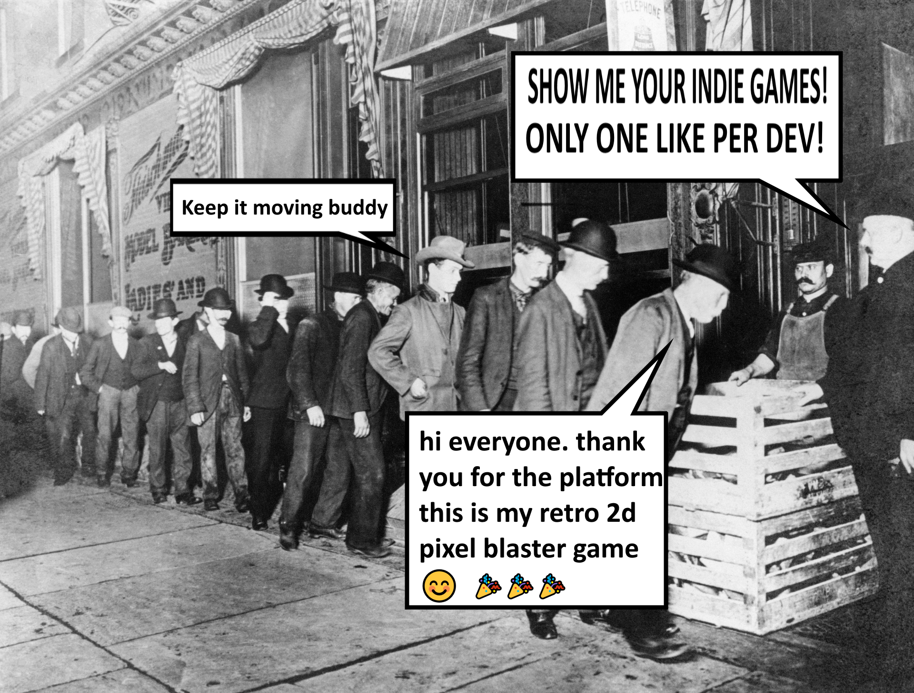

Why Do People Underestimate Making Games?

"I want to make a game."
Many people who say this probably think something like this first: write a few scripts, add a character, build a map, and the game is done. From the outside, it really looks that simple. After all, you only see a moving character and some working mechanics on the screen.
But making a game that feels like a real game needs much more work than people think. For example, making a character walk is not only about writing movement code. The animations need to work correctly. The sounds should fit the environment. The camera needs to be comfortable for the player. Sometimes even a small mechanic can take hours to fix because of bugs.
Think about a simple horror game. The player walks in a dark hallway, and after a few seconds a monster appears. For the player, this may only be a short scary moment. But for the developer, things are very different.
First, the monster needs to be modeled. Then animations are made for its movements. After that, an AI system is written so the monster can follow the player. Sounds are added. Lighting is adjusted to make the environment feel scary. Even after all this, the work is not finished. The developer still needs to test if the game runs well on weaker computers, fix bugs, and check the player experience again and again.
A moment that lasts only a few seconds for the player may take days of work for the developer.
This is why big game companies usually do not have only one person. Game development combines many different areas. One person writes code, another person creates models, another works on sounds, and someone else balances the gameplay.
Of course, this does not mean one person cannot make a game. Today, many independent developers create successful games alone. However, in these situations, one person often needs to be the programmer, designer, tester, and sometimes even the musician.
Maybe the hardest part of game development is not coding.
The hardest part may be spending hours on one bug, changing systems many times, and still continuing without giving up.
Because making a game is not only writing a few scripts.
The real challenge is bringing many different parts together and turning them into one experience that people will enjoy for hours.
In the end, when we play a game, we only see the finished product. What we do not see are the hundreds of small decisions, mistakes, and effort behind it.